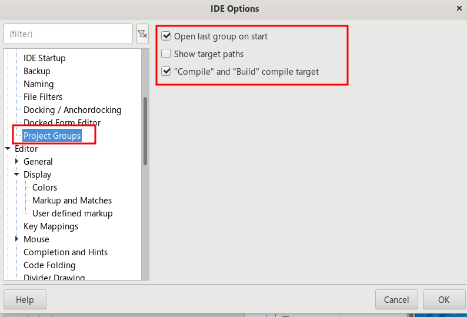
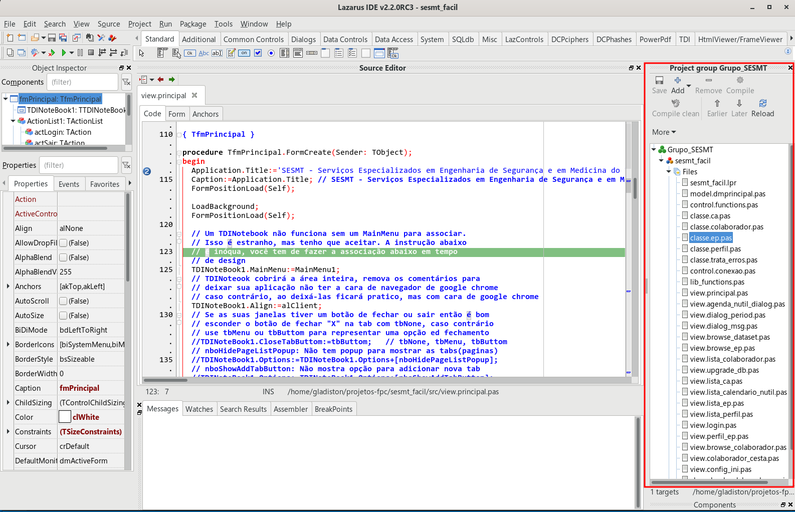
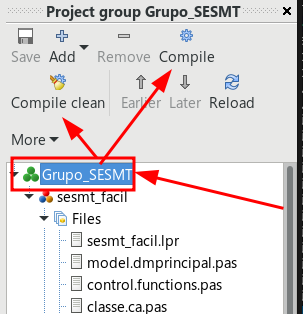
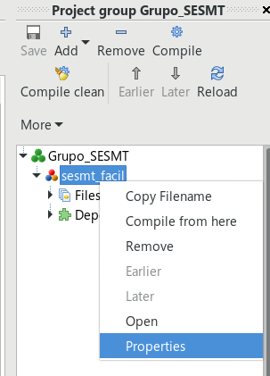
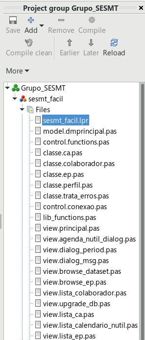

Por padrão o Lazarus-IDE abre apenas um projeto por vez, e isso nem sempre é bacana. Em alguns ambientes é conveniente ter todos os projetos num grupo e editar/compilar o que for mais conveniente. Por exemplo, abrir todos os projetos de um grupo, e compilar todos eles num único movimento, ao invés de compilar um de cada vez.
Há um recomendação pessoal, use o gerenciador de projetos apenas a partir da versão 2.2, eu tive alguns embaraços no Lazarus 2.0.13 e acho que o project manager não tá legal nesta versão, mas no Lazarus 2.2 está funcionando muito bem e substitui com vantagens o Project inspector.
Se você também pensa então instale o Project Manager seguindo estas instruções e depois assista ao vídeo que resume visualmente o que será feito:
Depois de instalado vá em Tools|Options|Enviroment|Project Grops e ligue as opções Open last group on starte também Compile and build compile target:

Depois vá em Project|New project group para criar um novo grupo ou então Project|Open project group para abrir um grupo existente. Você pode docá-lo num painel lateral caso queira deixá-lo permanente.

Por mais que eu queria explicar, o Project Group não é tão diferente do Project Inspector, a diferença reside em poder limpar, compilar(com seus diferentes Build Modes) ao invés de apenas um project, realizar esta operação em vários projetos.
Ao tocar no nome do grupo de projetos, você perceberá duas opções ficam habilitadas "Compile" e "Complete clean":

Estas opções lhe permirão respectivamente compilar todos os projetos do grupo ou limpar o lixo de compilação deles.
Ao compilar todos os projetos do grupo, o project manager repete o ultimo build mode do projeto, ele não dá a opção de trocar o Build mode para todos os projetos e essa é uma opção que o diferencia do Project Manager do Delphi. Se vocÊ precisa que o Build mode seja modificado terá que ir em Project|Project Options ou um clique com o mouse sobre o projeto e então escolher Properties, ambas levam ao mesmo lugar:

O Project group é uma opção bem vinda para programadores que a todo instante tem de trocar de projetos. Mas por ora, ao não oferecer troca rápida de "Build mode" para o grupo, sua vantagem é somente esta.
Se esta usando o Lazarus 2.2 ou superior é melhor deixar o Project group no lugar do Project inspector porque ao menos aqui, ele lista os arquivos numa ordem mais coerente, primeiro o arquivo do projeto, depois os datamodules e entãos os demais arquivos (não alfabeticamente):

Ainda não percebi se a forma listada acima foi intencional ou acidental, espero que tenha sido intencional porque foi muito boa a ideia, mas se foi acidental então corrigirei este artigo mais tarde.